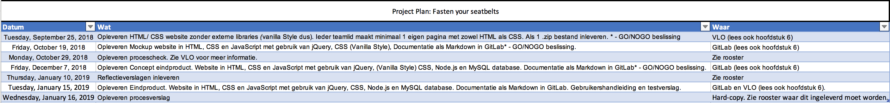

Risco's
De belangrijkste risico’s voor het succes van dit project zijn:
- De kwaliteit van een zelf ontwikkelde applicatie: Bij distributie van instabiele software naar Corendon zal de negatieve impact op onze fys groep(hele hva) Dit risico zullen we afdekken door goed te testen
- De stabiliteit en volwassenheid van de Open Mobility Interface in SIS: Omdat Oracle dezelfde interface gebruikt voor hun eigen applicatie mogen we vertrouwen op de stabiliteit hiervan.
- Privacie van de reizigers data: De applicatie zal gebruik maken van een beveiligde database
Alternatieven
Wat zijn de alternatieve opties die wij kunnen gebruiken als wij dit project niet maken
- We nemen geen actie. De nadelen hiervan zijn:
Dat reiziger die alleen reizen alleen blijven.
Planning
Dit is de planning met de datas van wat er moet worden ingeleverd
